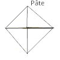

Ricetta per 18 cornetti
Ingredienti
500 g di farina di grano intero
10 g di lievito secco
60 g di zucchero
2 cucchiaio da tavola di cannella
10 g di sale
260 ml di latte
3 uovi (2 uovi per la pasta e 1 per pittare i cornetti per farli dorare)
160 g di burro freddo e duro direttamente dal frigorifero
Materiale
2 ramere per il forno
Tappe per la pasta
Riscaldare il latte 35 secondi al micro-onde. Aggiungere 2 uovi e sbattere. Aggiungere il zuccherò e il lievito e sbattere. Aspettare 5 minuti. Aggiungere la farina e mettere al robot. Lasciare il robot lavorare la pasta per 3 minuti o fine a quando la pasta sarà omogenea. Formare una palla con la pasta e lasciarla riposare nel forno con la porta chiusa e la luce accesa.
Quando la pasta si sarà doppiata, mescolararla al robot un poco per farla ricadere e piazzarla at frigorifero per 30 minuti.
Stendere l'impasto sulla tavola di lavoro con un mattarello infarinato. Usare il burro freddo dal frigorifero e romperlo a mano dal centro dell'impasto fino a 2 o 3 centimetri dei bordi.
Avvolgere il burro con la pasta e sigillare bene i bordi.

Stendere l'impasto stando attento a non lasciare scappare il burro. Cominciare a stendere partendo dal centro per formare un lungo rettangolo per piegarlo in 2, girarlo di 90° e piegarlo ancora in 2.
Per l'ultima volta
, ricomminciare la piegatura.
È importante di non piegare l'impasto di più. Se no, c'è un rischio di perdere consistenza gonfiata e leggera del cornetto.
Lasciare l'impasto riposare al frigorifero per 30 minuti. Vogliamo raffreddare il burro. È buono di mettere l'impasto al frigorifero se il burro diventa troppo morbido durante la piegatura.
Stendere l'impasto con il mattarello per renderlo fino e a forma di rettangolo di 40 x 50 cm. Tagliare 2 striscie di 20 cm x 50 cm. Tagliare triangoli di 20 x 10 cm. Arrotolare ciascun triangolo terminando con la punta.
Preparare 2 ramere con la carta pergamo e piazzare i cornetti lasciando spazio per lasciarli crescere :
Lasciarli gonfiare nel forno con la luce accesa per 1 ora.
Utilizzare un pennello per stendere l'ultimo uovo sbattuto sui cornetti. Per farli dorare.
Riscaldare il forno a 325°F in modo convezione. Cuocere solo 10 minuti. Fare attenzione ai cornetti vicini alla porta perché possono brusciare presto.
Ringraziamenti!
Ringrazio «la cuisine d'Annie» per la sua «Recette Croissants façon boulangerie».